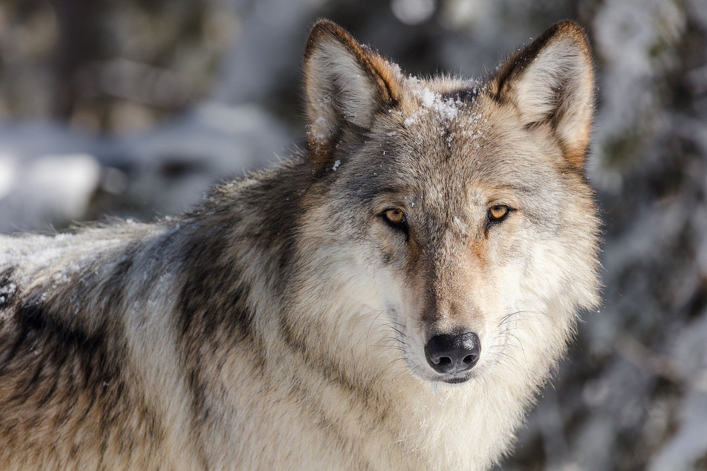
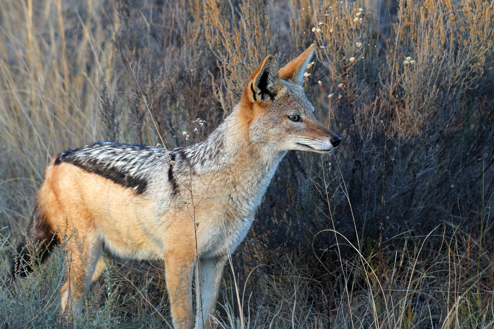
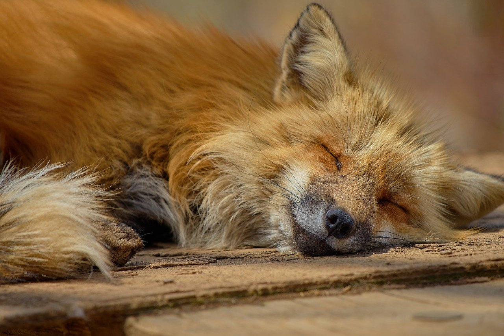
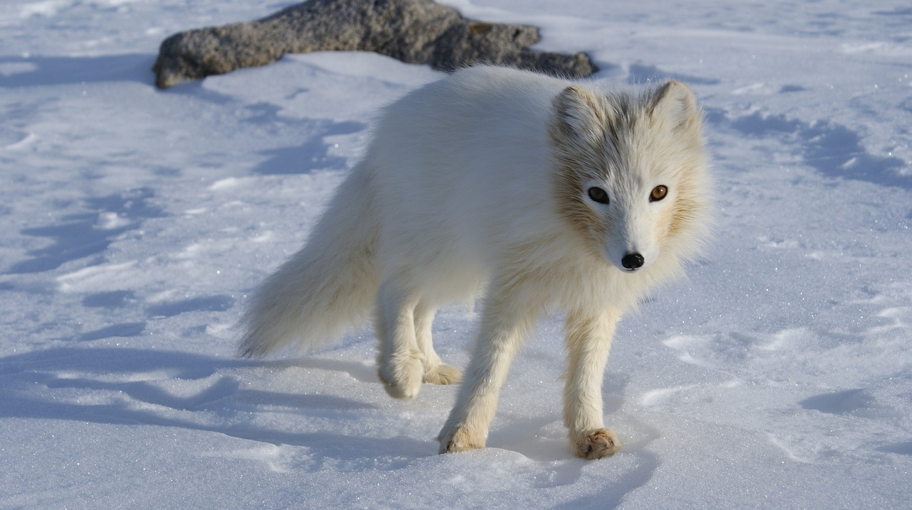
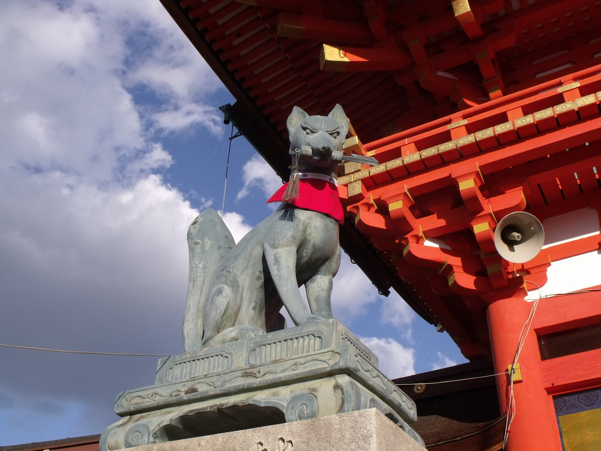

1.分類
学名︰Vulpes vulpes japonica
キツネ（狐）は、哺乳綱ネコ目（食肉目）イヌ科イヌ亜科の一部。
狭義にはキツネ属のことである。広義には、明確な定義はないがイヌ亜科の数属を総称するが、これは互いに近縁でない属からなる多系統である。
2.身体的特徴
一般的に、キツネの体格は、オオカミ・ジャッカルなど、イヌ科の他の種よりも小型である。平均的なオスのキツネの体重は、5.9kg、メスはそれより軽い5.2kg。俗に言うキツネ顔で、ふさふさした尾を持つ。
※オオカミ※ジャッカル
3.生態的特徴
イヌ科には珍しく、群れず、小さな家族単位で生活する。イヌのような社会性はあまりないとされるが、宮城県白石市の狐塚のように、大きなグループで生活していた例も知られる。
夜行性で非常に用心深い反面、賢い動物で好奇心が強い。そのため大丈夫と判断すると大胆な行動をとりはじめる。人に慣れることで、白昼に観光客に餌をねだるようになる事が問題になっている。
4.食性／繁殖
食性
生後1年も満たないで捕獲訓練をマスターし、獲物を捕らえるようになる。食性は肉食に近い雑食性。鳥、ウサギ、齧歯類などの小動物や昆虫を食べる。餌が少ないと雑食性となり人間の生活圏で残飯やニワトリを食べたりする。
繁殖
ホンドギツネの場合、繁殖期は12月から2月で、妊娠期間は約52日。全身がほぼ黒色で尾の先端が白い子を、巣穴の中で2～7頭産む。
5.生息分布
日本では、本州・九州・四国の各本島と淡路島にホンドギツネが、北海道本島と北方領土にキタキツネが生息している。近年、沖縄本島でも自然分布以外の流入で生息が確認されている。
6.起源／歴史
16世紀にイギリスでキツネ狩りが始まり、イギリスの文化となった。しかし、20世紀以降は、世界的な動物愛護の影響により、イギリスでは犬を使った狩猟が禁止されている。
キツネを精霊・妖怪とみなす民族はいくつかあるが、特に日本（大和民族）においては文化・信仰と言えるほどキツネに対して親密である。キツネは人を化かすいたずら好きの動物と考えられたり、それとは逆に、宇迦之御魂神の神使として信仰されたりしている。
